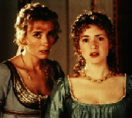

Contents | Features | Reviews | News | Archives | Store |
 |
|
| Movie Credits | Buy It! |
Sense and Sensibility
Review by Carrie Gorringe
|  | Directed by Ang Lee. Starring Emma Thompson, Screenplay by Emma Thompson, |
For modern individuals, the terms "sense" and "sensibility" seem like synonyms, so their inclusion in a title must appear to cancel each other out. But, in nineteenth-century terms, the two are far from alike. Although "sense" has retained its practical connotations through to the present day, "sensibility" is often confused with the modern meaning of "sensible". In the Georgian world, "sensibility" was associated with strong emotions and the gift of psychological discernment. In a world with a strong emphasis on social rank and decorum, the object of the game (at least at the upper end of the spectrum) was to retain a rich inner life of feeling and imagination while keeping them both firmly under the control of a calm and rational external facade, even in the face of changing circumstances. The balance was precarious, but it had to be maintained; too much "sense" could lead to an impoverished inner life and too much "sensibility" could lead to social disgrace.
Within the confines of this mindset, the female members of the Dashwood family epitomize the problems that result when one suffered a change in circumstances, yet had to continue on as if nothing had happened, primarily because such a socio-economic system provided no psychological cushion to weather the change. Mrs. Dashwood (Jones), and her daughters Elinor (Thompson) Marianne (Winslet) and Margaret (Francois), have all fallen upon hard times indeed, thanks to the laws of primogeniture. The head of the household has just died, and the estate on which they live has now passed into the hands of Mr. Dashwood's son from a previous marriage. John Dashwood (Fleet), initially intending to be generous to his stepfamily due to a deathbed promise that his father extracted from him, is gradually persuaded by his grasping and snobbish wife, Fanny (Walter), that he need only provide the women with five hundred pounds a year. It is an incredible sum, to be sure, but not for women who have been accustomed to an upper-class lifestyle; by the standards of their set, the distaff Dashwoods are on the verge of penury.
Fortunately for the Dashwood women, a distant relative, Sir John Middleton (Hardy) steps in to offer them a "cottage" on his estate. Before they leave for Middleton's estate, Fanny's brother, Edward Ferrars (Grant) arrives for a visit, and he and Elinor form an alliance of sorts which is very quickly put to the sword by Fanny's machinations. Once the women are settled in their cottage, it is Marianne's turn to experience love, only she has two men from whom to choose: the dashing and rakish John Willoughby (Wise) and the outwardly staid but deeply-principled Colonel Christopher Brandon (Rickman), who loves Marianne in a deep and most unrequited way -- as unrequited as Elinor loves Edward. Over the next two hours, all of these threads are to be sorted out, with many requisite plot twists.
What Austin conveyed so brilliantly in Sense and Sensibility is the arbitrary nature of life and how a sudden shift in financial circumstance, so precarious for all, but especially for women and especially in the nineteenth century, could invert all of the rules by which one had lived one's life. The result was having to rely, as Blanche du Bois once stated with unintentional irony, on the kindness of strangers. If one had relatives in good standing (as the Dashwood women do), and they were willing to provide assistance, one could, at best, eke out a sort of semi-respectable existence in genteel poverty. If not, the situation could be rather dire. Being sensible was a luxury available only to the very wealthy, something which Elinor knows only too well; it is her practicality and her painful acknowledgment of the family's financially-straitened circumstances which prevent her from pursuing Edward (and, by extension, personal happiness) with more determination. Marianne, on the other hand, is all sensibility. Raised in privilege, headstrong, spoiled, and beautiful, she is ill-equipped to cope with her family's sudden poverty. Both sisters obviously stand as the chief metaphors for each quality in the title (but each of the remaining characters lines up behind them on opposing sides of the line). Nevertheless, through the number of travails suffered by all of the participants, it is apparent that only luck and wealth save them from having to face the consequences of their "unbalanced" personalities.
It is to Thompson's credit as a first-time screenwriter that she keeps her adaptation amazingly faithful to Austin's work (unlike the -- if one will pardon the expression -- "adaptation" of Hawthorne's The Scarlet Letter that contaminated screens last year). Many of her omissions, among them the exclusion of relatively superfluous characters such as Sir John's wife, are obviously based upon what one might call very sensible choices (in both meanings of the term); because of such careful decisions, the narrative runs smoothly, and not just because the original source is so dependent upon the most transparent set of coincidences to move the narrative forward (where are those well-to-do relatives when one needs them in real life?). The cinematic narrative works so well because Thompson obeys the first law of adapting literary works for film: the themes and tensions from the original source must remain intact; thus, only those episodes and characters that are important to unequivocally presenting and sustaining the presence of those themes and tensions should appear on screen. This is what happens in Sense and Sensibility; the passage of events and time is so smooth that it is almost imperceptible, but never less than enthralling. Every adaptation should be this flawless.
But a great adaptation can go to pieces once it has been put through the production mill, if for no other reason than the number of compromises that have to be made along the way. Fortunately, this production was in the hands of Ang Lee, a director with an indisputable talent for making the interior life into a fascinating narrative experience. In other words, he was the perfect choice for this assignment. Lee keeps this soap-opera-with-a-pedigree absolutely engrossing from start to finish. He is assisted by the vivid cinematography of Michael Coulter which gives Sense and Sensibility a lushly verdant, almost otherworldly, feel. Such an approach is entirely in keeping with the film's preoccupation with a type of love that often finds itself existing within the realm of the hyperreal. Because of its strong underpinnings, Sense and Sensibility never crosses over the line into the realm of the grotesquely maudlin romantic portrayals a la Mills and Boon -- but, admittedly, the film comes perilously close to flirting with the possibilities (and, perversely enough, simply watching the tug-of-war that ensues near that border is entertaining in itself).
The strong creative trend in Sense and Sensibility is sustained through to the acting. It may seem tiresome to associate English actors with the concept of "quality", but every performance in this film is direct evidence as to why the comparison is more often apt than not. All of the performances are standouts, most notably those of Alan Rickman and Kate Winslet. Rickman projects onto and into Colonel Brandon a sense of internal anguish that is almost tangible, but which always passes through a filter of decorum and dignity beforehand. Winslet is absolutely breathtaking as the luminescent but dangerously irresponsible Marianne. Hugh Grant's Edward is the soul of discretion and responsibility and the combination is surprisingly charming. In addition to her masterful adaptation of Austin's novel, Thompson creates a muted but always intriguing performance as the long-suffering Elinor, the fulcrum of the family. Wise provides the precise level of swashbuckling charm to the cad Willoughby. The supporting cast, including Hugh Laurie (best known to American audiences for his role as "Bertie" Wooster in the Jeeves and Wooster series), sustain the overall impression of quality, even if the limited aspect of certain roles provide the audience with only a partial glimpse of the actors' talents. All things considered, Sense and Sensibility is a film that one might, to borrow Elinor's delightfully understated phrase, esteem very highly indeed.
Contents | Features | Reviews | News | Archives | Store
Copyright © 1999 by Nitrate Productions, Inc. All Rights Reserved.